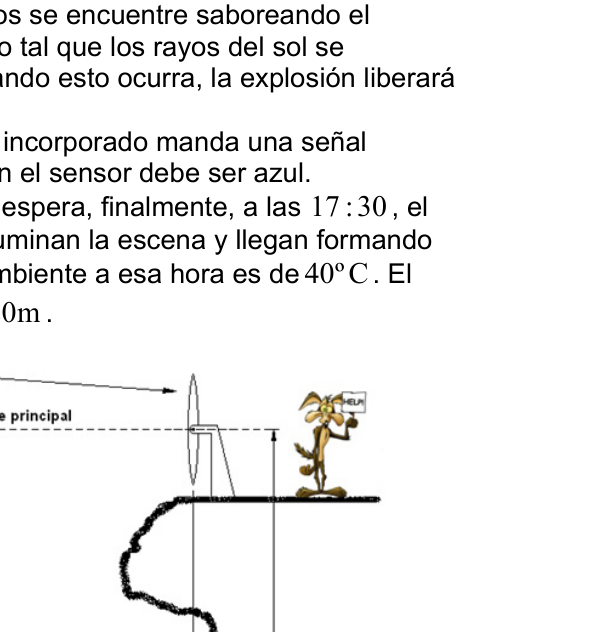
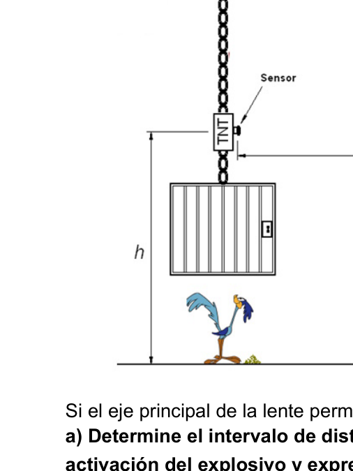

Lens Focusing Sunlight Sensor Color
PT105. Ciudad de Buenos Aires. Verde. Coyotus Hambrientus. Una tarde soleada en un desierto norteamericano, el coyote se dispone, por enésima vez, a dar fin a su lucha por atrapar al veloz y escurridizo correcaminos. La idea del coyote es la siguiente: colocar un montículo de alpiste en la carretera para que su perseguido se detenga a merendar. Pero no es el deseo del coyote alimentar al correcaminos, sino conseguir su propia merienda. A tal fin compra una superlente giratoria marca ACME y la coloca en lo alto de una gran piedra. A continuación, cuelga
una jaula de un poste de luz mediante una cadena que tiene un explosivo (marca
ACME por supuesto). Una vez que el correcaminos se encuentre saboreando el
alpiste, el coyote debe posicionar la lente de modo tal que los rayos del sol se
concentren en el sensor que detona la carga. Cuando esto ocurra, la explosión liberará
la jaula y ésta dejará atrapado al correcaminos.
El explosivo se activa cuando el sensor que tiene incorporado manda una señal
eléctrica. Para que esto ocurra la luz que incide en el sensor debe ser azul.
Después de una larga preparación y una ansiosa espera, finalmente, a las 17 :30 , el
correcaminos llega a destino. Los rayos del Sol iluminan la escena y llegan formando
un ángulo
º
38
ψ con el suelo. La temperatura ambiente a esa hora es de 40ºC. El centro de la lente se encuentra a una altura 20m H = .
Si el eje principal de la lente permanece horizontal:
a) Determine el intervalo de distancia focal [
]
M
m f
f ;
de la lente, útil para la
activación del explosivo y expresarlo como una desigualdad para la magnitud
f .
b) Determine la mínima altura h a la cual el coyote podrá posicionar el explosivo
en la cadena.
El torpe coyote, sin querer, golpea la lente y ésta gira un ángulo
º
30
θ
en sentido
antihorario (visto en el gráfico). La lente se traba y ya no se puede mover sobre su eje.
Además, el sensor del explosivo se le cayó al suelo antes de colocarlo y ahora sólo se
activa cuando incide sobre él un haz de longitud de onda
600nm
S
λ =
.
c) Determine la distancia D (ver el gráfico) a la que debe posicionar el centro de
la lente para lograr activar el explosivo.
Nota: A partir de aquí, siguen valiendo las consideraciones que preceden al punto (c)
acerca de la posición inclinada de la lente y el nuevo λ de trabajo del sensor.
En un nuevo acto de torpeza, el coyote enciende un tanque de combustible (marca
ACME) y las llamas alcanzan la superlente. Cuando el fuego se extingue la
temperatura de la lente se encuentra en650ºC . Si en ese instante el correcaminos se
encontrase comiendo el alpiste:
d) ¿A qué altura h , medida desde el suelo, debería encontrarse el explosivo (el
sensor) para que la trampa funcionase?
La lente se encuentra a 650ºC y el ambiente a 40ºC. La temperatura ambiente del
desierto comienza a descender a razón de 1,5ºC cada 23 minutos y el coyote sabe
que el correcaminos tardará 4 minutos en llegar a la trampa.
e) ¿Cuánto valdrá la distancia focal de la lente en el instante en que llegue el
correcaminos?
Ahora suponga que la lente marca ACME no fuese delgada, sino que tuviese un
grosorδ . Suponga también que la lente se encuentra a una distancia D fija y con su
eje principal en posición horizontal. Si
Sr es el radio de curvatura de la superficie de la
lente sobre la que inciden los rayos del Sol, y
Er el de la superficie por la que dichos
rayos emergen de la lente:
f) Obtenga la relación
(
)
δ
;
E
S
r
f
r =
para que la lente pueda activar el sensor con
cualquiera de las dos longitudes de onda siguientes.
1
650nm
λ =
y
2
600nm
λ =
.
Determine el grosor de la lente necesaria para que esto ocurra y a partir del valor
obtenido analice la viabilidad de la construcción de la lente.
Información que le puede ser útil
Fórmula del constructor de lentes:
(
)
⎥
⎦
⎤
⎢
⎣
⎡
⎟⎟
⎠
⎞
⎜⎜
⎝
⎛⎟
⎠
⎞
⎜
⎝
⎛
−
+
−
−
2 1 2 1 1 1 1 1 1 1 r r n n r r n f δ
Donde f es la distancia focal, n es el índice de refracción (relativo al aire) del material refringente, δ es el grosor de la lente y 1r es el radio de curvatura de la superficie donde incide la luz.
Ley de enfriamiento de Newton:
( )
(
)
t
k
ambiente
i
ambiente
e
T
T
T
t
T
−
⋅
−
+
Aberración cromática:
Cuando la luz blanca (formada por todos los colores) incide sobre una superficie
refringente, los haces de cada color se refractan con diferentes ángulos. Por lo tanto,
la distancia focal de una lente depende de la longitud de onda del haz que la atraviesa.
Espectro visible:
Hoja de datos que viene dentro de la caja de la superlente:
Importante: La lente no presenta aberración esférica
SUPERLENTE MARCA ACME
Tipo de lente: equiconvexa
Radios de curvatura:
m
R
R
25
2
1
= [ ] C C º 60 º 20 −
Tipo de vidrio: flint pesado
Coeficiente de dilatación lineal:
K
/
1
10
2,9
6
−
×
γ
Coeficiente de rapidez de intercambio de calor: s k / 1 10 6,7 3 − ×
Índice de refracción en función de la longitud de onda:


Topic: Geometric Optics Metodi: Ray Tracing, Thin Lens & Mirror Equation, Small-Angle Approximation Competenze: Physical Reasoning Objects: Lens Fonte: Testo (PDF) — p.3
Lens Focusing Sunlight Sensor Color
PT105. Città di Buenos Aires. Verde. Coyotus Hambrientus. Un pomeriggio di sole in un deserto nordamericano, il coyote si dispone, per enema. Un’altra volta, per mettere fine alla sua lotta per catturare il veloce e scoraggioso corridoio. L’idea del Il coyote è il seguente: mettere un monte di alpinismo sulla strada per fargli Perseguito, si ferma per mangiare. Ma non è il desiderio del coyote di nutrirlo.
- Non è un’idea. Per questo compra un superlente . La rotatoria segna ACME e la pone su una grande pietra. Poi appenda.
una gabbia di un poste di luce con una catena che contiene un esplosivo (marchio ACME, naturalmente). Una volta che il corriere si trova a assaporare il Alpiste, il coyote deve posizionare la lente in modo tale che i raggi del sole si concentratevi sul sensore che sta facendo esplodere la carica. Quando questo accade, l’esplosione rilascerà La gabbia e questa la farà prendere i sentieri. L’esplosivo si attiva quando il sensore incorporato manda un segnale. elettrica. Per farlo, la luce che incide sul sensore deve essere blu. Dopo una lunga preparazione e un’anticissima attesa, finalmente, alle 17:30 , il
- Il corridoio arriva a destinazione. I raggi del sole illuminano la scena e arrivano formando un angolo º 38 = ψ con il pavimento. La temperatura ambiente a quell’ora è di 40°C. El Il centro della lente si trova ad un’altezza 20m H = .
Se l’asse principale della lente rimane orizzontale: a) Determina l’intervallo di distanza focale [ ] M m f f ; di lente, utile per la l’espressione di una disuguaglianza di magnitudo f . b) Determina l’altezza minima h a cui il coyote può posizionare l’esplosivo
- La catena. Il coyote torpe, involontariamente, colpisce la lente e questa gira un angolo º 30 = θ in senso il tempo di lavoro (visto nel grafico). La lente si blocca e non può più muoversi sull’asse. Inoltre, il sensore dell’esplosivo è caduto sul pavimento prima di metterlo e ora è solo uscito. attiva quando si incide su di esso un raggio di lunghezza d’onda 600nm S λ = . c) Determina la distanza D (vedi grafico) a cui deve posizionare il centro di la lente per attivare l’esplosivo. Nota: Da qui in poi, continuano a valere le considerazioni precedenti al punto (c) La posizione inclinata della lente e il nuovo λ di funzionamento del sensore. In un nuovo atto di torpezza, il coyote accende un serbatoio di combustibile (marchio L’incendio raggiunge la superlente. Quando il fuoco si spegne la La temperatura della lente è di 650 ° C . Se in quel momento il corretto corretto si E poi mi sono trovato a mangiare l’alpiste: d) A che altezza h, misurata dal suolo, dovrebbe trovarsi l’esplosivo (il
- per far funzionare il trappo?
La lente si trova a 650°C e l’ambiente a 40°C. La temperatura ambiente del Il deserto inizia a scendere a un tasso di 1,5°C ogni 23 minuti e il coyote lo sa. che il corridoio ci vorrà 4 minuti per arrivare al trappo. (e) Quanto vale la distanza focale della lente all’atto dell’arrivo del
- Corretto? Supponiamo che il lente di marca ACME non fosse sottile, ma che avesse un grosorδ . Supponiamo anche che il lente sia a una distanza fissa D e con il suo il principale asse in posizione orizzontale. Si Il signor è il raggio di curvatura della superficie della L’obiettivo è quello che i raggi del sole incidono su di esso, e È la superficie per la quale si dice.
- I raggi emergono dalla lente: f) Ottieni la relazione ( ) δ ; E S r f r = per poter attivare il sensore con Qualsiasi delle due lunghezze d’onda seguenti. 1 650nm λ = y 2 600nm λ = . Determina il grosso della lente necessario per farlo e dal valore Il risultato è stato analizzato sulla fattibilità della costruzione del lentiglio. Informazioni che possono essere utili per lei Formula del costruttore di occhiali: ( ) ⎥ ⎦ ⎤ ⎢ ⎣ ⎡ ⎟⎟ ⎠ ⎞ ⎜⎜ ⎝ ⎛⎟ ⎠ ⎞ ⎜ ⎝ ⎛ −
− −
2 1 2 1 1 1 1 1 1 1 r r n n r r n f δ
Dove f è la distanza focale, n è l’indice di refraczione (relativo all’aria) del materiale refringente, δ è lo spessore della lente e 1r è il raggio di curvatura della superficie dove la luce colpisce.
Legge di Newton sul raffreddamento: ( ) ( ) t k ambiente i ambiente e T T T t T − ⋅ − +
Aberrazione cromatica: Quando la luce bianca (formata da tutti i colori) incide su una superficie e i fasci di ogni colore si refrattono a angoli diversi. Quindi, La distanza focale di una lente dipende dalla lunghezza d’onda del fascio che la attraversa. Spettro visibile:
Datasheet che viene dentro la casella della superlente:
Importante: la lente non presenta aberrazioni sferiche
SuperLente Marchio ACME Tipo di lente: equiconvexa Radi di curvatura: m R R 25 2 1
= [ ] C C º 60 º 20 −
Tipo di vetro: flint pesante Coefficiente di dilatazione lineare: K / 1 10 2,9 6 − ×
γ
Coefficiente di rapido scambio di calore: s k / 1 10 6,7 3 − ×
Indice di refraczione a seconda della lunghezza d’onda:
Topic: Geometric Optics Metodi: Ray Tracing, Thin Lens & Mirror Equation, Small-Angle Approximation Competenze: Physical Reasoning Objects: Lens Fonte: Testo (PDF) — p.3
The following table shows the results of the measurement of the measurement of the measurement of the measurement of the measurement of the measurement of the measurement of the measurement of the measurement of the measurement of the measurement of the measurement of the measurement of the measurement of the measurement of the measurement of the measurement of the measurement of the measurement of the measurement of the measurement of the measurement of the measurement of the measurement of the measurement of the measurement of the measurement of the measurement of the measurement of the measurement of the measurement of the measurement.
PT105. City of Buenos Aires. Green, please. Coyotes are hungry. On a sunny afternoon in a North American desert, the coyote is ready, for the first time. Once again, to end his struggle to catch the fast and elusive runway. The idea of the Coyote is like this: place a mountain mound on the road so that your The pursued stops to snack. But it ‘s not the coyote ‘s desire to feed the I’m not going to get you your own snack. To that end , buy a super lens . rotator marks ACME and places it on top of a large stone. Then hang it up.
a cage of a light pole by means of a chain containing an explosive (mark ACME of course). Once the coroner finds himself tasting the Alpine, the coyote must position the lens so that the sun’s rays are Focus on the sensor that detonates the charge. When this happens, the explosion will release. The cage and this one will get the trailers trapped. The explosive is activated when the sensor that it has built-in sends a signal. electrical. For this to happen, the light that hits the sensor must be blue. After a long preparation and anxious wait, at last, at 5:30 p.m., the The corridors are at their destination. The sun ‘s rays illuminate the scene and come forming . a corner º 38
ψ On the ground. The room temperature at that hour is 40 degrees. El The center of the lens is at a height 20m H = .
If the main axis of the lens remains horizontal: (a) Determine the focal length interval [ ] M m f f ; The lens is used for the Activation of the explosive and expressing it as an inequality for magnitude f . (b) Determine the minimum height h at which the coyote can position the explosive. on the chain. The clumsy coyote, unwittingly, hits the lens and it turns an angle. º 30
θ In this sense time (see chart). The lens gets jammed and can no longer move over its axis. Plus, the explosives sensor fell to the ground before we put it in and now it’s just gone. activates when a wavelength beam hits it 600nm S λ = . (c) Determine the distance D (see graph) at which the centre of the the lens to get the explosive to go off. Note: From here on, the considerations above point (c) continue to apply. about the tilt position of the lens and the new λ working of the sensor. In a new act of clumsiness, the coyote lights a fuel tank (mark ACME) and the flames reach the superlens. When the fire is extinguished the The temperature of the lens is 650 degrees Celsius . If at that moment the right-of-way is I found myself eating the alpiste: (d) How high h, measured from the ground, should the explosive be located (the So the trap works?
The lens is at 650oC and the environment is at 40oC. The ambient temperature of the The desert starts to drop at a rate of 1.5 degrees every 23 minutes and the coyote knows. The trail will take four minutes to reach the trap. (e) What is the focal length of the lens at the time the lens reaches
- What? Now suppose the ACME lens wasn’t thin, but had a
- It ‘s gross . Suppose the lens is at a fixed distance D and with its The main axis in horizontal position. Si The curvature radius of the surface of the lens on which the sun’s rays strike, and It ‘s the surface you ‘re talking about . Rays emerge from the lens: (f) Get the relationship ( ) δ ; E S r f r = So the lens can activate the sensor with any of the following two wavelengths. 1 650nm λ = y 2 600nm λ = . Determine the lens thickness needed to make this happen and from the value The results obtained analyze the feasibility of the lens construction. Information that may be useful to you Formula of the lens manufacturer: ( ) ⎥ ⎦ ⎤ ⎢ ⎣ ⎡ ⎟⎟ ⎠ ⎞ ⎜⎜ ⎝ ⎛⎟ ⎠ ⎞ ⎜ ⎝ ⎛ −
− −
2 1 2 1 1 1 1 1 1 1 r r n n r r n f δ
Where f is the focal length, n is the refractive index (relative to air) of the material refractive, δ is the thickness of the lens and 1r is the radius of curvature of the surface where the light hits.
Newton ‘s law of cooling: ( ) ( ) t k environment i environment e T T T t T − ⋅ − +
Chromatic aberration: When white light (formed by all colors) hits a surface refractory, the beams of each color refract at different angles. Therefore, The focal length of a lens depends on the wavelength of the beam that passes through it. The visible spectrum:
Data sheet that comes in the superlens box:
Important: The lens does not have spherical aberration
Supermarkets are on the way. Type of lens: equiconvex Radius of curvature: m R R 25 2 1
= [ ] C C º 60 º 20 −
Type of glass: heavy flint Linear dilation coefficient: K / 1 10 2,9 6 − ×
γ
Heat exchange rate coefficient: s k / 1 10 6,7 3 − ×
Refraction index according to wavelength:
Topic: Geometric Optics Metodi: Ray Tracing, Thin Lens & Mirror Equation, Small-Angle Approximation Competenze: Physical Reasoning Objects: Lens Fonte: Testo (PDF) — p.3